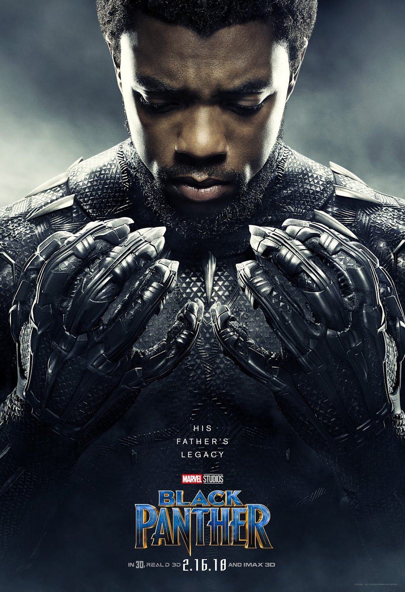

Black Panther

Título original: Black Panther
Año : 2018
Duración: 134 min.
País: Estados Unidos
Dirección: Ryan Cooger
Reparto: Chadwick Boseman, Michael B. Jordan, Lupita Nyong'o, Danai Gurira, Martin Freeman, Angela Bassett, Forest Whitaker, Andy Serkis, Winston Duke, Daniel Kaluuya, Sterling K. Brown, Florence Kasumba, Letitia Wright, Phylicia Rashad, Sydelle Noel, John Kani, Stan Lee
Género: Acción. Fantástico. Aventuras | Superhéroes. Cómic. Marvel Comics. 3-D
Sinopsis: “Black Panther" cuenta la historia de T'Challa quien, después de los acontecimientos de "Capitán América: Civil War", vuelve a casa, a la nación de Wakanda, aislada y muy avanzada tecnológicamente, para ser proclamado Rey.